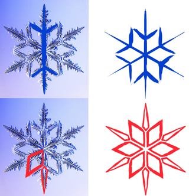
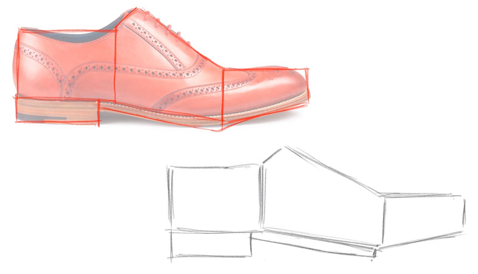
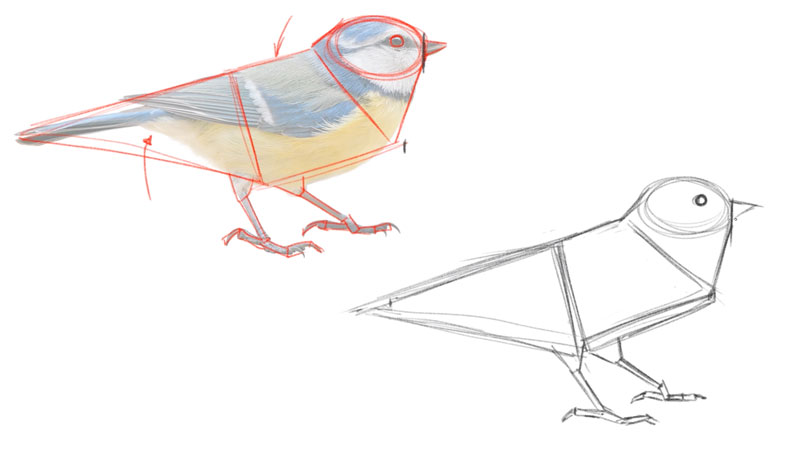
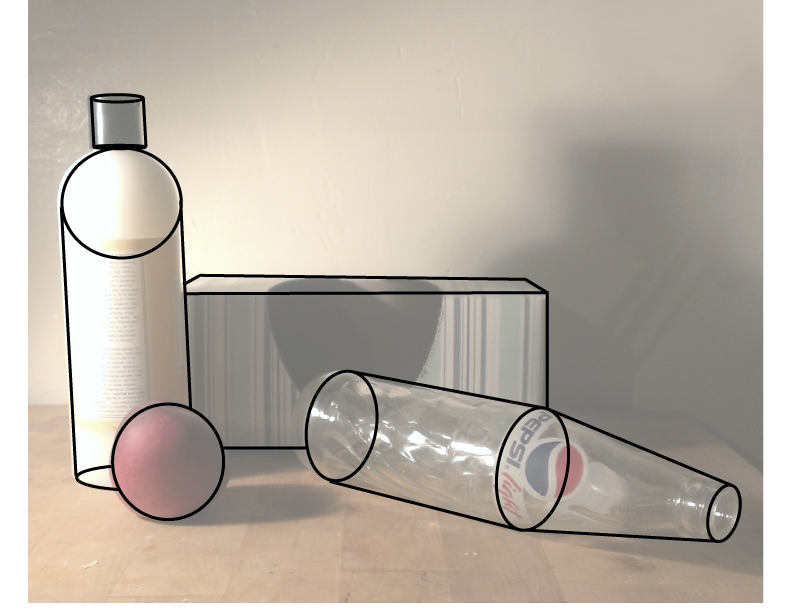
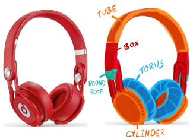
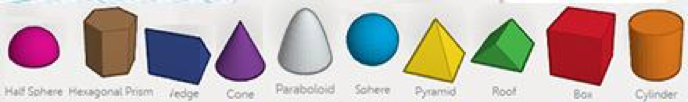
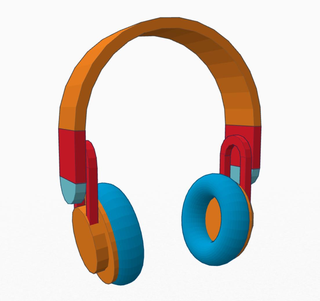
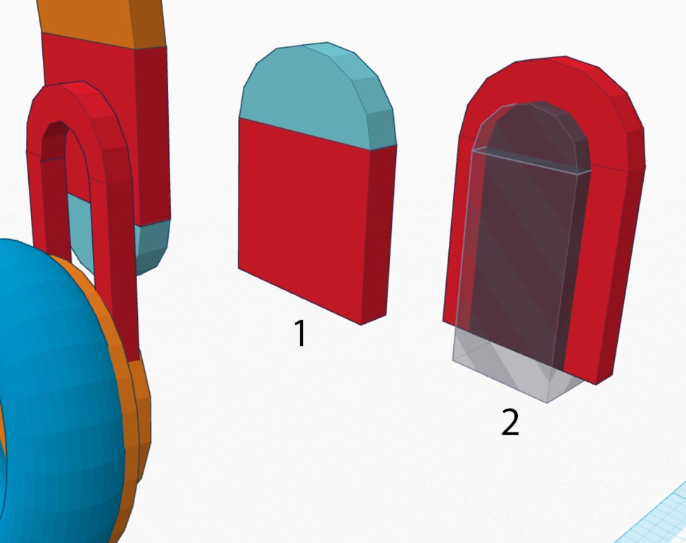

⬡ 3D Modeling • Lesson 4 ⬡
🧸 Build a toy from shapes
Make a recognizable toy by combining simple 3D shapes.
🧠 Vocab / Vocabulario
Construction: Breaking a complex object into simple shapes before building it / Descomponer un objeto complejo en formas simples antes de construirlo
📣 You've made coins and rings. Now pick any toy or object you love and build it from scratch in TinkerCAD!
Choose Your Toy + Break It into Shapes
🧸 Pick any toy or object (headphones, a car, an animal, a game controller...)
🔍 What shapes do you see? Every object is just simple shapes combined. This is called shape decomposition .
Real objects broken into simple shapes:

Snowflake

Shoe

Bird

Still life
Headphones broken into TinkerCAD shapes:

Tube + Box + Torus + Round Roof + Cylinder = Headphones
Open the activity
👉 Open the Tinkercad class. Enter the class code your teacher provides.
Choose Google and sign in with your school account. Open the Favorite Toy Activity if your teacher assigned it; otherwise start a new 3D design.
Build It in TinkerCAD
🧱 Drag shapes onto the workplane to form the basic outline of your toy
🔗 Group to combine shapes + Hole to carve out spaces
✨ Refine: stretch, shrink, copy/paste, add color and detail
TinkerCAD shapes you can use:

Half Sphere, Hexagonal Prism, Wedge, Cone, Paraboloid, Sphere, Pyramid, Roof, Box, Cylinder
👀 Exemplar

Finished model

Individual parts
📤 Export & Submit
Select your complete toy model. Click Export, then .STL.
Open Downloads. Rename the file LastName-FirstName-toy.stl. Keep the .stl ending.
Upload the STL to this Canvas assignment
Keep your editable design in Tinkercad. STL stores the 3D shape, without colors. Renaming a picture does not convert it to STL.
💬 Reflect
Write 2–3 sentences in submission comments. Start with:
"The hardest part of building my toy was ___ and I solved it by..."
Words to help / Palabras de apoyo
construction = construcciónshape decomposition = descomposición en formasGroup = agruparHole = huecoalign = alinearresize = cambiar tamañoshapes = formasiterate = probar y mejorarrotate = rotar
⬆️ Level Up
Done? Check out 22 Tips & Tricks for TinkerCAD and apply one to improve your design.
✅ Done?
STL uploaded + reflection in comments = complete
📣 Ya hiciste monedas y anillos. Ahora elige cualquier juguete u objeto que te guste ¡y constrúyelo desde cero en TinkerCAD!
Elige tu juguete + descompónlo en formas
🧸 Elige cualquier juguete u objeto (audífonos, un carro, un animal, un control de juego...)
🔍 ¿Qué formas ves? Todo objeto es solo formas simples combinadas. Esto se llama descomposición en formas .
Objetos reales descompuestos en formas simples:
Copo de nieve
Zapato
Pájaro
Naturaleza muerta
Audífonos descompuestos en formas de TinkerCAD:
Tube + Box + Torus + Round Roof + Cylinder = Audífonos
Abre la actividad
👉 Abre la clase de Tinkercad. Introduce el código que te da tu maestro/a.
Elige Google e inicia sesión con tu cuenta escolar. Abre la actividad Favorite Toy si fue asignada; si no, empieza un diseño 3D nuevo.
Constrúyelo en TinkerCAD
🧱 Arrastra formas al plano de trabajo para crear el contorno básico
🔗 Group para combinar formas + Hole para tallar espacios
✨ Refina: estira, encoge, copia/pega, agrega color y detalles
Formas disponibles en TinkerCAD:
Media esfera, Prisma, Cuña, Cono, Paraboloide, Esfera, Pirámide, Techo, Caja, Cilindro
👀 Ejemplo
Modelo terminado
Partes individuales
📤 Exporta y envía
Selecciona tu modelo completo. Haz clic en Export y luego en .STL.
Abre Descargas. Cambia el nombre a Apellido-Nombre-toy.stl. Conserva la extensión .stl.
Sube el STL a esta tarea en Canvas
Conserva el diseño editable en Tinkercad. STL guarda la forma 3D, sin colores. Cambiar el nombre de una imagen no la convierte en STL.
💬 Reflexión
Escribe 2–3 oraciones en los comentarios del envío. Empieza con:
"La parte más difícil de construir mi juguete fue ___ y lo resolví..."
Words to help / Palabras de apoyo
construction = construcciónshape decomposition = descomposición en formasGroup = agruparHole = huecoalign = alinearresize = cambiar tamañoshapes = formasiterate = probar y mejorarrotate = rotar
⬆️ Sube de Nivel
¿Terminaste? Mira los 22 Tips & Tricks para TinkerCAD y aplica uno para mejorar tu diseño.
✅ ¿Listo?
STL subido + reflexión en comentarios = completo